Repo utilizado para elaborar el trabajo en equipo para la asignatura “Programación y manejo de datos en la era del Big Data” de la Universitat de València durante el curso 2022-2023. La página web de la asignatura puede verse: aqui
Introducción
Las películas son un método de entretenimiento digital y expresión artística. Permiten sumergirse en una realidad totalmente distinta, contar una historia y transmitir emociones a través de una pantalla. El consumo de películas ha cambiado a lo largo de los años, el método convencional de ver películas es el cine, pero con la evolución de la tecnología se han creado nuevos medios consumo de entretenimiento digital. Ahora existen los “Streaming Services”, que permiten disfrutar de un extenso catálogo de películas a través de internet desde la comodidad de su propia casa. Analizaremos la evolución de consumos de películas, Streaming Services VS Cine. Y, compararemos los diferentes Streaming Services usando los datos de Netflix, Disney+, PrimeVideo y Hulu.
Datos
Obtuvimos datos de distintas fuentes para nuestra investigación.En principio, los datos sobre los ingresos de Cine lo obtuvimos de The Numbers que son basados en el mercado doméstico de cine. El mercado doméstico se define por el territorio de América del norte (Estados Unidos, Canadá, Puerto Rico y Guam). Luego, creamos un dataset con esta información el cual está en formato xlsx.
Proseguimos a realizar un dataset sobre los ingresos de los streaming services. Los ingresos de Netflix, Hulu, Disney+, AmazonPrime que incluyen PrimeVideo, Audiobooks, Digital Musica, E-books y entre otros.
Y por último obtuvimos los datos de Streaming Service de un Dataset de Kaggle sobre películas de Netflix, PrimeVideo, Hulu y Disney+ con sus correspondientes calificaciones de IMDB y Rotten Tomatoes.
Análisis según sus ingresos
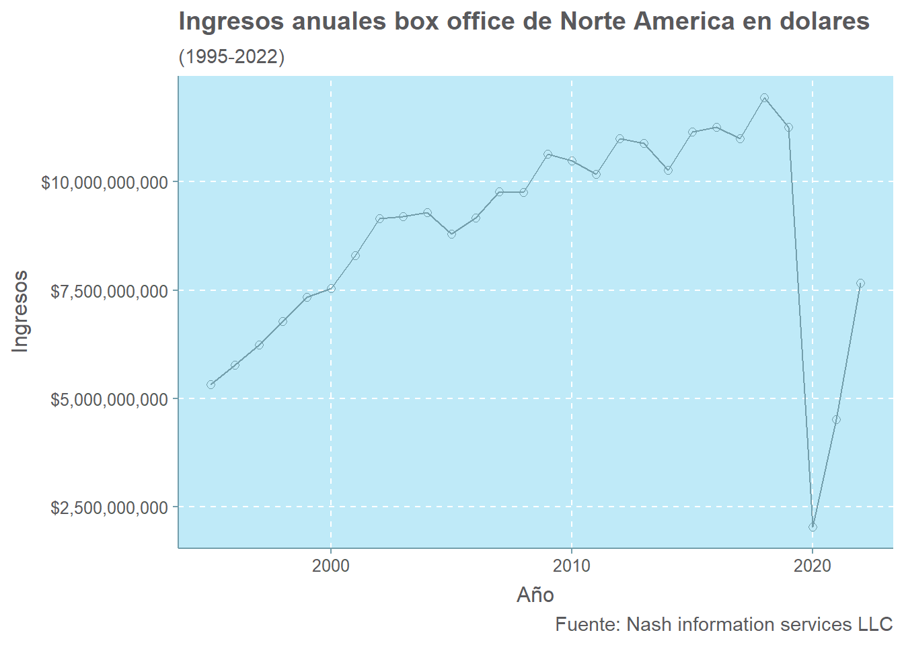
Los ingresos anuales de box office en su mayoria tiene una tendencia creciente, hasta que ocurre una fuerte caida. Como podemos observar, el declive de los ingresos taquilleros se debe a la pandemia de Covid-19 en el 2020. Tras este suceso, los ingresos de box office retoman la tendencia creciente aunque no a la misma magnitud antes de la pandemia.
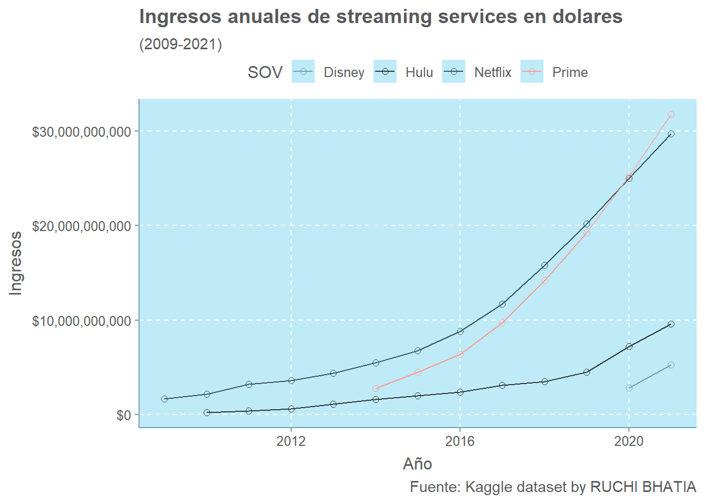
Los ingresos anuales de los streaming services tienen una tendencia creciente durante todo su periodo. Como podemos observar, los ingresos de Netflix y PrimeVideo son significativamente mayores al resto. Es importante destacar que Disney+ es relativamente nuevo, ya que su inauguración fue a finales del 2019 y esta podría ser una de la razones de sus ingresos comparativamente bajos.
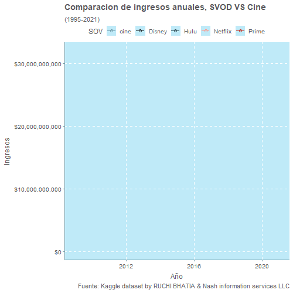
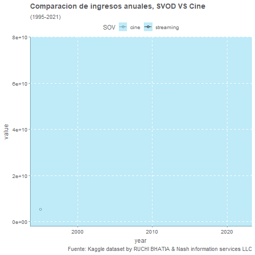
Los resultados de la comparación de cine y streaming services son contundente para el cine. En el 2017, los ingresos de Netflix ya eran superiores a los ingresos de cine. Desde el 2018 los ingresos de Netflix y PrimeVideo son mayores que los de cines, en cambio Hulu aún permanece debajo del cine. Tras la pandemia de Covid-19 todos los ingresos de los streaming services son mayores que el cine. Esto nos da entender que en los últimos 6 años la audiencia se ha desviado a usar más el método de streaming service para el consumo de películas que el método tradicional del cine.
Comparación entre los Streaming Services
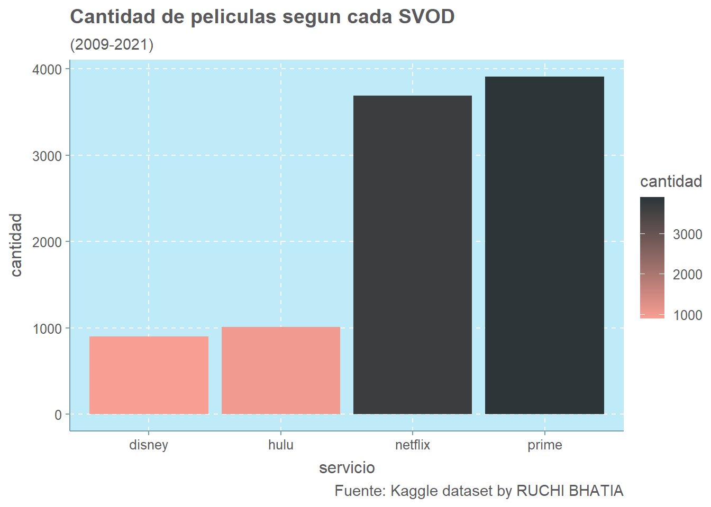
Podemos observar la cantidad de las peliculas disponible en Netflix y PrimeVideo es mucho mayor que Disney y Hulu. Netflix y PrimeVideo están disponible en más países que otros servicios de streaming. El tamaño de sus bibliotecas es enorme, por otro lado Disney es muy nuevo por tanto su catalogo es mas limitado. En cuanto a Hulu, su catálogo de películas está por debajo de Netflix y PrimeVideo por alrededor de 3500 películas.
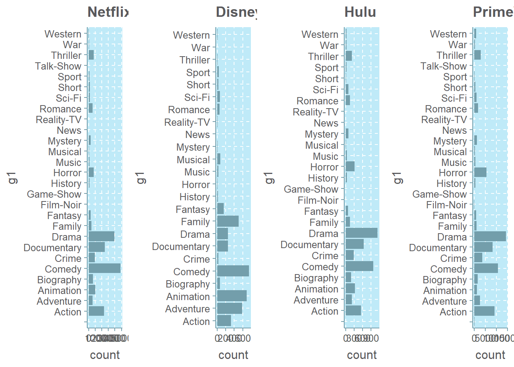
El grafico muestra los top 12 géneros basados en la cantidad de películas. Comparando el número de películas por género en las 4 plataformas, observamos que los géneros de comedia y drama son lideres. Los resto de géneros muestran resultados significativos menores al género de comedia y drama.
Comparación de cada Streaming Service según sus Scores
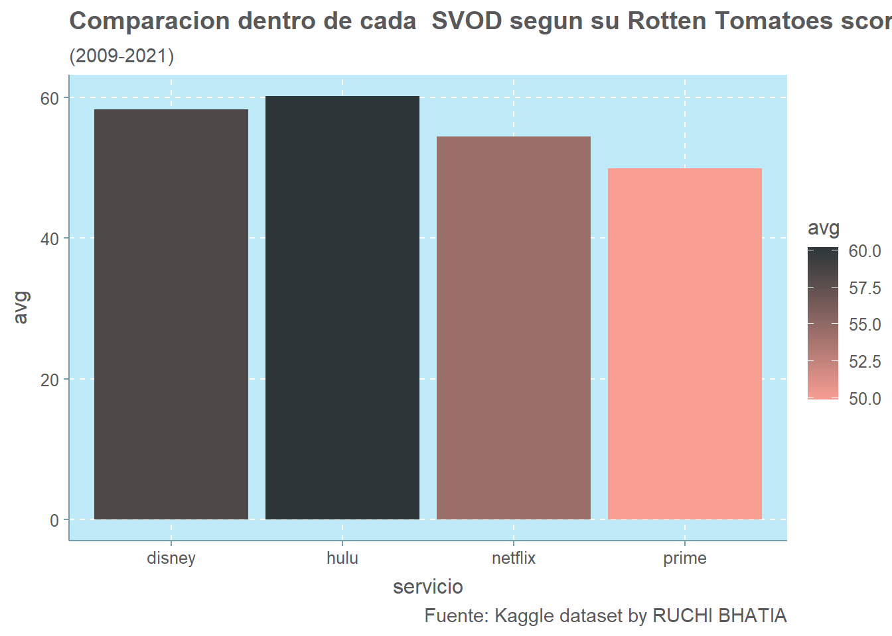
Aqui podemos ver, aunque Hulu tiene el menor número de películas (según las figuras anteriores), ofrece la mejor calidad de películas según Rotten Tomatoes, por lo que merece la pena que los espectadores exploren las películas del sitio. Por el contrario, aunque Prime Video tiene el mayor número de películas, la calidad de las películas está por debajo de la media según la clasificación de Rotten Tomatoes.
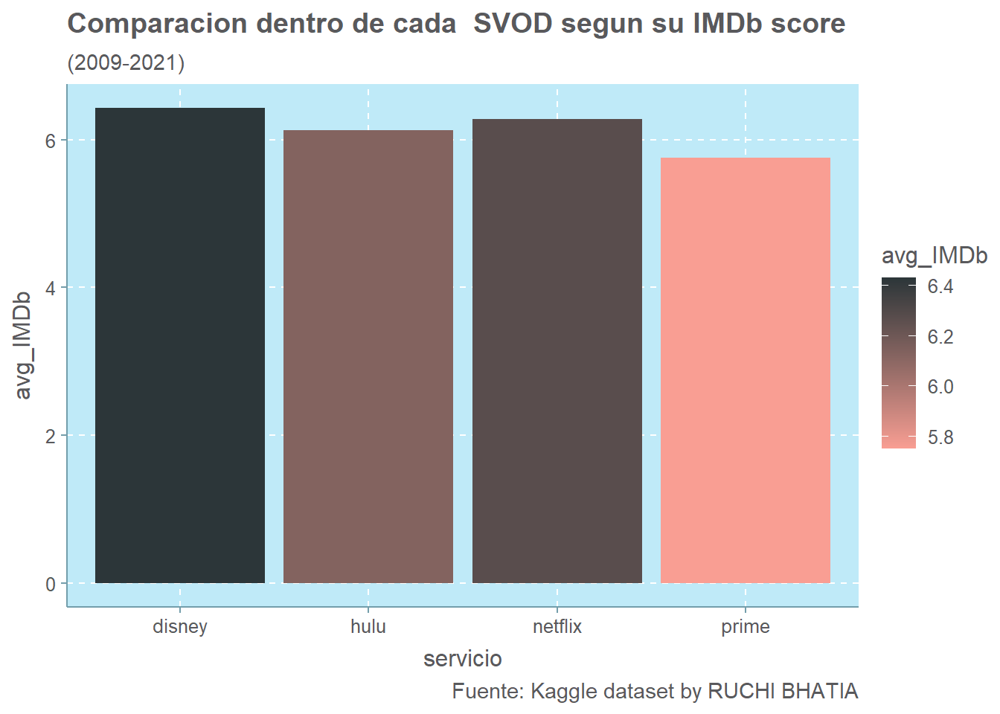
Podemos observar que, en comparación con Rotten Tomatoes Disney ofrece la mejor calidad de películas. Luego, Netflix y Hulu. Ambas coinciden que a pesar de su extenso catálogo Prime Video posee la mayor cantidad de películas de baja calidad.
Comparación entre plataformas segun su clasificacion de edad por pelicula
El cero quiere decir es disponible para todo público y podemos observar que todos tienen una alta cantidad de películas apta para todo público. En segundo lugar, Netflix, Prime Video y Hulu tiene el número más alto disponible es para los jóvenes adultos y adultos. No es de extrañar que Disney+ ofrezca la mayor cantidad de películas que pueden ver todos los grupos de edad, pero con un mayor enfoque en los niños.
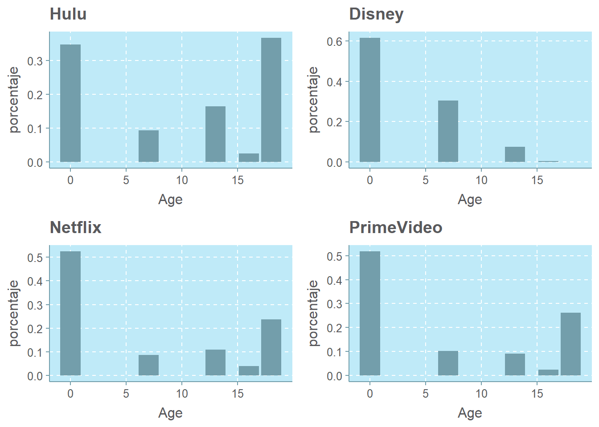
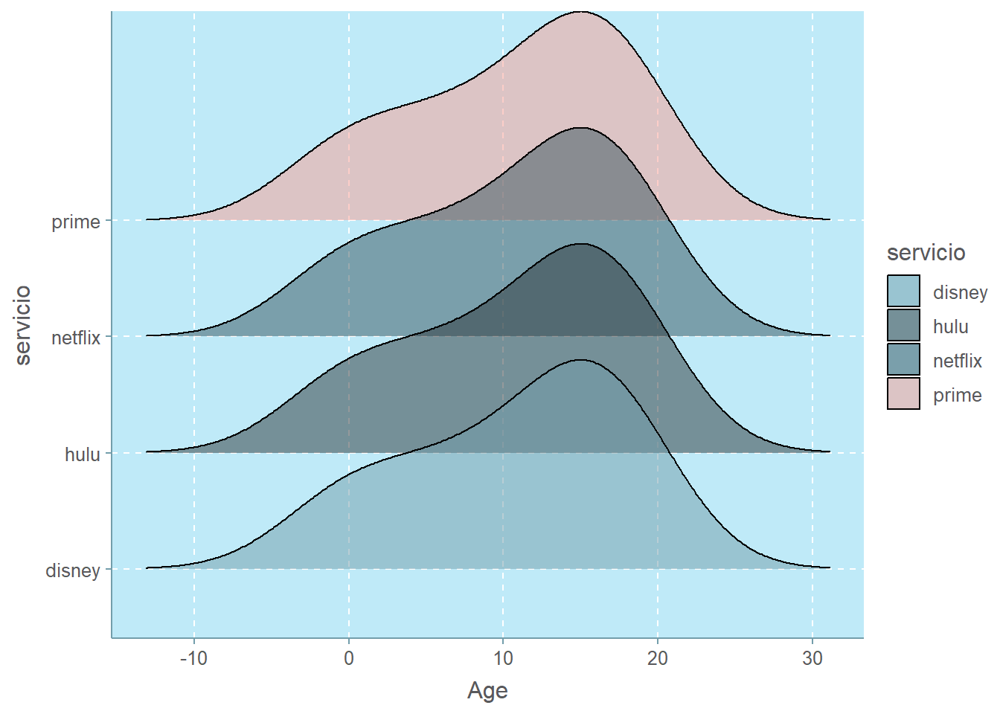
Comparación entre plataformas segun el año de estreno por pelicula
La comparación ilustra que Prime Video posee un catálogo más extenso según el año de estreno por película. Disney+ igual presta un amplio catálogo de películas que extienden un extenso periodo de tiempo. Ambas poseen una variedad de peliculas estrenadas desde 1930 a 2022. En cambio, Hulu y Netflix ofrecen películas con años de estreno más recientes, especifico estrenos de los años 2000-2020.
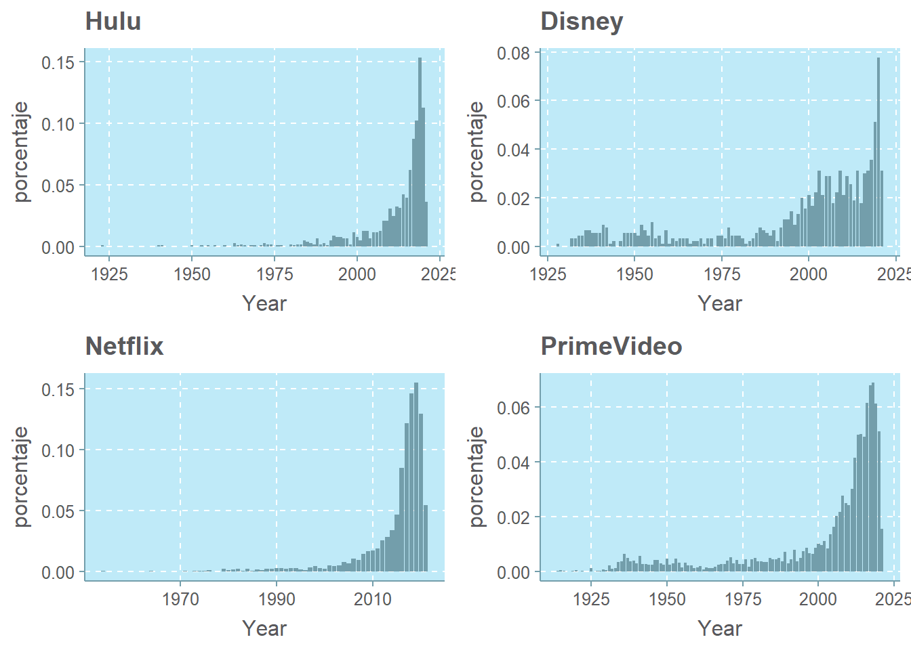
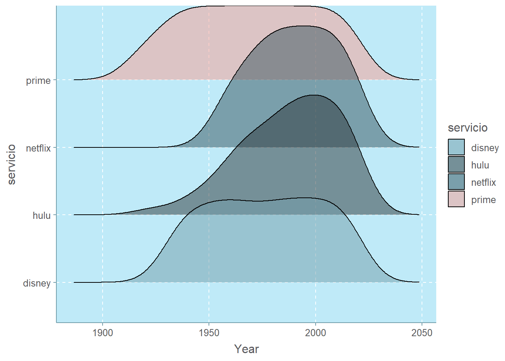
Regresión
Realizamos una regresión entre los streaming services y sus respectivas calificaciones según Rotten Tomatoes y IMDb. El resultado de 0.498 significa que el modelo explica el 50% de la variabilidad de los datos de respuesta en torno a su media. Entonces el modelo explicar aproximadamente la mitad de la variación observada. Además, hay que tomar en cuenta que su valor de p indica una relación débil y poco significante.
La regresion mala da NA y Nan por relación lineal entre las variables explicativas
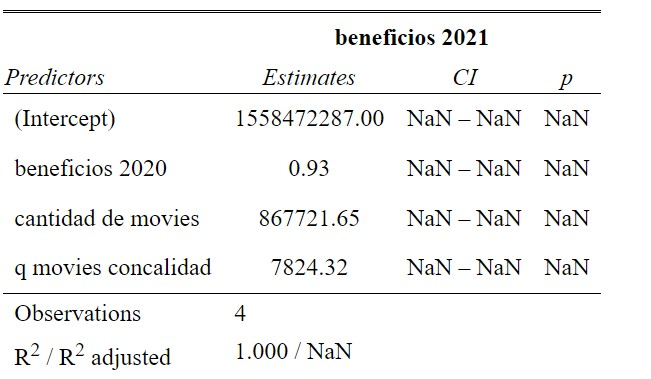
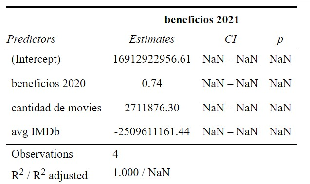
Esta intenta explicar los ingresos 2021 con las variables presentes.
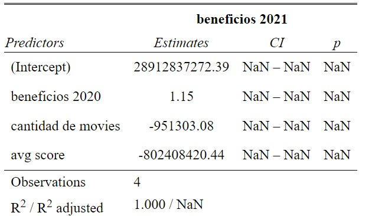
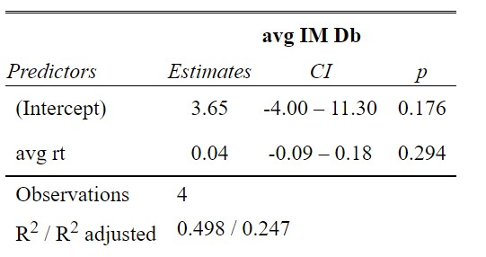
Conclusión
El cine, como lo conocemos, ya venía enfrentando estas dificultades incluso antes de la llegada del COVID-19 y el cierre indefinido de las salas alrededor del mundo. Así, la cuarentena y el distanciamiento social se convirtieron en el mejor escenario para el ‘florecimiento’ de las plataformas, una de las tantas fuentes de entretenimiento casero. Los más destacados son los que hemos visto anteriormente.
Netflix es una de las plataformas de streaming líderes del mercado, que destaca sobre todo por la gran cantidad de producciones propias que está realizando en los últimos años. Permite múltiples perfiles de usuario, lo que lo hace perfecto para compartir, y también cuenta con múltiples producciones en diferente idiomas.
Prime Video también está intentando hacerse fuerte en el sector de las plataformas de vídeo bajo demanda, y aunque hasta ahora no ha tenido producciones tan populares como las de Netflix está invirtiendo mucho en futuros contenidos. Su gran aliciente es que su suscripción es la de todo Amazon Prime, por lo que por el mismo precio cuentas con muchas ventajas en la tienda online de Amazon.
Disney+ es una plataforma recién llegada a streaming, que destaca sobre todo por su amplio contenido infantil. Esta plataforma cuenta con franquicias como las de Disney, Pixar, Marvel, Star Wars y National Geographic. Es el que más perfiles permite crear para compartir.
En cuanto a Hulu, tiene múltiples planes y complementos, tiene una enorme biblioteca de TV y TV en directo, la lista de canales de TV en directo incluye más de 60 canales y programas originales. Sin embargo, es inconsistente en las selecciones de las temporadas más antiguas de televisión, la televisión en directo sólo está disponible para locales, y no tiene cobertura internacional.
En conclusión negar que el streaming va a dominar el entretenimiento a nivel mundial en un futuro a muy corto plazo es negar lo evidente. Aunque quizás vivamos una época complicada para el séptimo arte, cada vez estas plataformas y sus producciones propias tienen menos que envidiar a las grandes productoras y en ese punto debe residir nuestra esperanza.